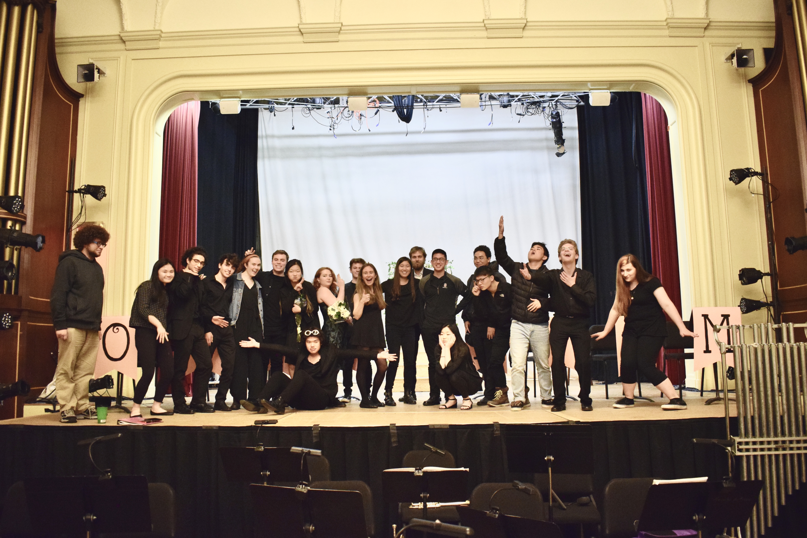
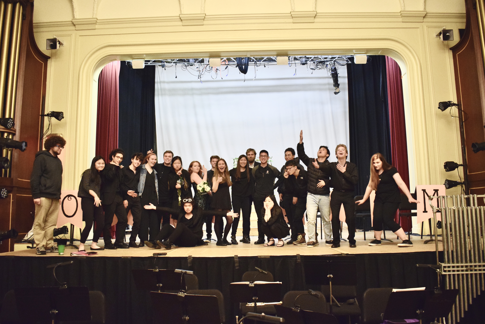

Hiyooo!!!
Welcome to my corner of the internet!
My name is Xinru (pronounced "shin-rue") and I’m a junior at Brown University studying Music and Computer Science. I’m a creative problem solver passionate about innovation, social change, and the future of art. Fun facts about me: I'm trained to take my peers out into the wilderness for 5 days, I've read over 400 audiobooks, and if I hear random sounds I will have the uncontrollable urge to tell you what note it is :)
On the more professional side, my experiences include working in Marketing and Development with the Chicago Youth Symphony Orchestras, Data and Analytics with the Kennedy Center for the Performing Arts, a Work Study at the City of Providence, and Venture Capital Investing and supporting social minded start-ups with the Emerson Collective. My wide ranging experiences gives me expertise in working with diverse teams to bring equitable ideas to life!
Things I’m currently working on (in no particular order)!
- Rethinking systems @ Unshackled Ventures, Lime Connect, and Emerson Collective
- Building equitible communities @ Brown RISD Innovation Community, and Teaching Buddies
- Creating the future of art as a music director, producer, and creative technologist
If any of these sound interesting, please feel free to reach out! :)


 
